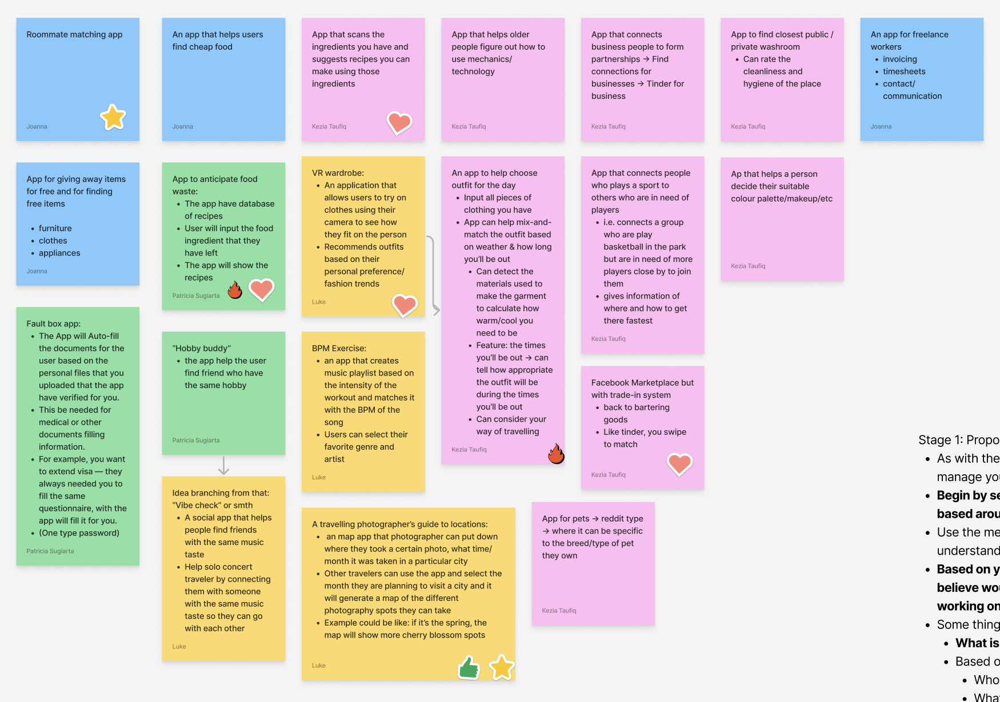

This was a project for IAT 334: Interface Design, made in Summer 2023. With a team of 3 other group mates, we were tasked with conceptualizing, creating and prototyping an app. After conducting research and interviews, we decided on a pet care app for rescued dogs.
Roles were split quite evenly, we all worked on ideation, research, slide designs, presentations, and prototyping. I took on editing the video and doing the voiceover.
FurEverHome is a mobile application dedicated to support pet owners with rescued dogs, that aims to create a nurturing environment for both the owner and pet. The goal is to ensure that every rescued animal receives the love, care, and attention they deserve.
App Features
Daily health check-in to keep track of the health and well-being of the pets
Community forum for users to connect and seek advice on various aspects of pet care with a live chat to connect with volunteers
A resources page with articles covering topics such as fostering guides for new pet owners and the process of surrendering animals
Process

Stage 1: Proposal
In the first phase of our project we had to come up with ideas for apps and narrow down those ideas into our top 3. We used the Figjam to note down all ideas and vote on which ones were the most viable. We had to consider what the design domain or category of app we wanted to design for, who our target audience would be, what are the goals of our target user, and what challenges and activities these users have. We settled on 3 ideas that we presented: